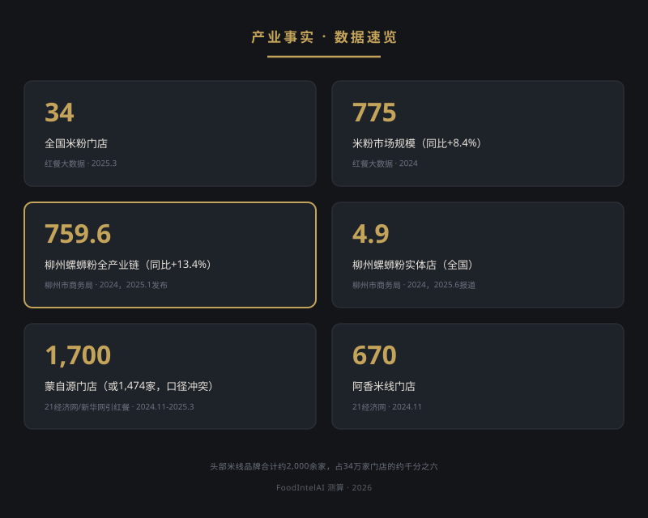
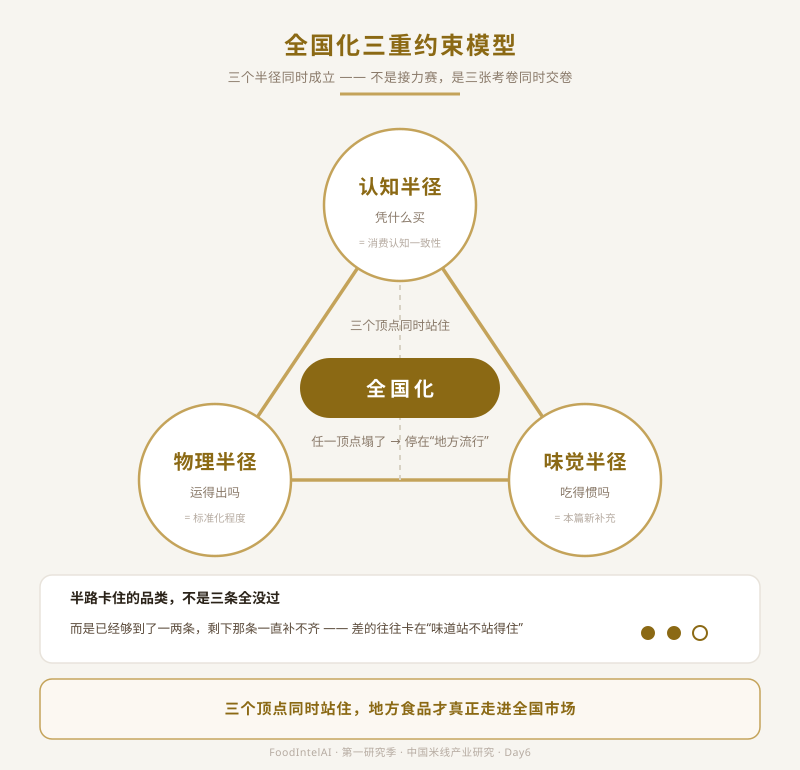
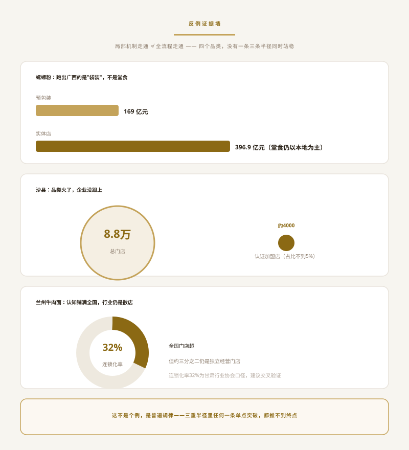
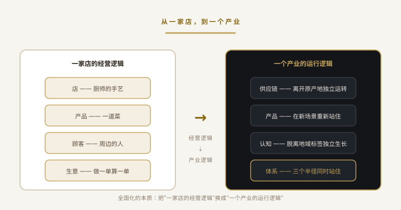

区域品类全国化的四种迁移机制——从地方味觉到全国市场，品类扩张背后的产业迁移规律
| 数据点 | 数值 | 来源 | 年份 |
|---|---|---|---|
| 全国米粉门店 | 34 万家 | 红餐大数据（新华网转载） | 2025.3 |
| 米粉市场规模 | 775 亿元，同比+8.4% | 红餐大数据 | 2024（截至2024） |
| 蒙自源门店 | 超1700家（或1474家，口径冲突如实标注） | 21经济网/新华网引红餐 | 2024.11 / 2025.3 |
| 阿香米线门店 | 超670家 | 21经济网 | 2024.11 |
| 柳州螺蛳粉全产业链销售收入 | 759.6亿元，同比+13.4%（其中预包装169亿元/实体店396.9亿元/配套衍生193.7亿元） | 柳州市商务局、柳州螺蛳粉协会（经中新网、工人日报报道） | 2024年数据，2025.1发布 |
| 柳州螺蛳粉实体店数量 | 全国约4.9万家 | 柳州市商务局 | 2024年数据，2025.6报道 |
| 头部品牌合计占比 | ≈ 2000余家 / 34万家 ≈ 千分之六 | FoodIntelAI 测算 | 2026 |

前五天，六维框架（消费时段窗口/客单价值/消费认知一致性/标准化程度/老板自由度/资本吸引力）解决的是品类内部的比较问题——七大区域体系放在同一套坐标里，谁更占便宜。
今天要问的问题换了一个方向：米线这个品类作为一个整体，有没有可能跨出云南，摆上全国餐桌。
六维框架里其实已经埋了半个答案。"标准化程度"决定的正是产品能不能离开原产地被复制——这对应下面要讲的物理半径；"消费认知一致性"决定的正是换了个地方，顾客还认不认这个东西——这对应认知半径。今天要补的第三条，六维框架里没单独拎出来讲：离开原产地，味道站不站得住，这是味觉半径。
三条半径凑齐，才是这道题完整的坐标系。
一个地方食品能不能摆上全国餐桌，由三个"半径"同时决定，不是接力赛，是三张考卷同时交卷：

三个顶点同时站住，地方食品才真正走进全国市场；哪一个顶点塌了，三角形就立不起来，品类只能停在"地方流行"这一层。半路卡住的品类，通常不是三条全没过，而是已经够到了一两条，剩下那条一直补不齐。
味觉半径：一个地方食品离开原始消费环境后，核心风味是否仍具备跨区域的消费适应能力。
这里的"适应"不只是"好不好吃"，还包含四个更具体的变量：
拿米线本身举例：问题往往不是"云南米线不好吃"，而是消费系统整体不同——云南本地是"早餐、重汤、重鲜、慢消费"，全国大多数城市的主流场景是"午餐、快节奏、高翻台、低认知成本"。味觉半径考验的，是产品能不能在这套新系统里重新找到位置，而不只是把配方原样搬过去。
先说清楚一点：供应链能力、产品策略、消费场景、文化认知，这四个东西本来就不在同一个维度上——这是有意为之，不是分类粗糙。全国化这道题从来不是单一维度能解的，四个杠杆分属产业链的不同环节，正因为不同层，才需要放在同一张表里看它们各自能撬动多少、又各自卡在哪里。
| 迁移机制 | 核心逻辑 | 验证案例 | 案例数据（真实，可核） | 这组数据实际验证了什么 |
|---|---|---|---|---|
| A. 供应链先行 | 先解决复制，再谈规模——不少品类走不出去，卡点不在消费者接不接受，而在产业能力能不能离开原产地 | 麻辣烫连锁（杨国福/张亮） | 杨国福全国门店超6900家，张亮超6400家（智研咨询，2025.1）；弗若斯特沙利文预测2025年全行业连锁化率约26% | 头部品牌能把供应链复制到全国，不等于整个品类都跟着连锁化——个体案例走通，品类整体未必跟上 |
| B. 品类重构 | 不复制原产品，换一个消费入口——工业化产品先进入全国消费者手里，再反过来带动原产地认知 | 柳州螺蛳粉（预包装/袋装化） | 2024年全产业链759.6亿元，其中预包装169亿元、实体店396.9亿元（柳州市商务局，2025.1发布） | 换产品形态确实能突破物理半径，但预包装收入还不到实体店的一半——这重构出的是一块增量市场，本地堂食这条线基本原地未动 |
| C. 场景迁移 | 产品形态不变，消费场景挪了位置——地方生活习惯挪进城市的新场景，完成大众化渗透 | 米线品牌（蒙自源/阿香） | 蒙自源超1700家（或1474家，口径冲突如实标注，21经济网/新华网，2024.11-2025.3）；阿香超670家（21经济网，2024.11） | 消费场景确实从云南早餐挪到了全国的午餐、夜宵，但头部品牌规模仍停在千店级，距离"全国性品类资产"该有的量级还差一截 |
| D. 文化资产 | 品类从食物升格为文化符号——消费者买的不是味道，是"我认得它从哪儿来" | 沙县小吃、兰州牛肉面 | 沙县小吃总门店披露达8.8万家、年营业额超550亿元（2023年披露），沙县小吃集团自身认证加盟店约4000家上下（经济观察网/腾讯新闻，2024）；兰州牛肉面全国门店超5万家，行业连锁化率约32%（甘肃相关行业协会口径，2025，经第三方平台转引，建议交叉验证原始公告） | 文化符号确实能把品类刻进全国认知，但认证/连锁门店的占比很低——品类破圈，企业规模并未跟着同步集中 |
米线的处境：四种机制在米线身上都试过，但没有一种跑通全流程——这正是Day6要拆开讲的部分。表格本身已经指向了原因：即便是公认"走出去了"的案例，也没有一个三条半径同时站住，它们只是各自在某一条腿上做到了极致。
这四个杠杆看似分属不同层面，但拉长看，它们其实是在做同一件事：把"一家店的经营逻辑"一点点换成"一个产业的运行逻辑"——这句话放在这里先埋个伏笔，结尾还会再接回来。

上面这张表里的每一组数字，其实都自带一个反例，不用再另找证据：
1. 螺蛳粉的"出圈"和米粉的"上桌全国"，是两件不同的事：预包装169亿元，实体店396.9亿元——真正跑出广西的，是"袋装螺蛳粉"这个新物种，柳州本地的堂食这条线，基本还在原地。机制B的成功，恰好把机制A（把堂食也复制到全国）的难度暴露了出来。
2. 沙县小吃的双重结构：全国8.8万家门店，几乎人尽皆知这个符号，但沙县小吃集团自己认证的加盟店只有约4000家，占比不到5%。换句话说：沙县完成了品类层面的全国渗透，但没有完成企业层面的集中化——这两件事本来就是两条不同的赛道，一条跑通了不代表另一条也跑通了。
3. 兰州牛肉面走的是同一条路：全国5万+门店，认知度早已铺满全国，但行业连锁化率约32%（这个数字本身还需要交叉验证）——认知半径打通了，另外两条腿没跟上，行业依然以独立经营的门店为主，还没有出现能把这份认知转化为集中规模的连锁品牌。
4. 麻辣烫的供应链看起来是四者里跑得最顺的一个，但把镜头拉远到整个行业，连锁化率也只有约26%——头部两家公司合计一万三千多家门店，放进整个麻辣烫市场里，仍然只是其中一部分。
这四条反例拼在一起，指向同一个结论：三重半径里，任何一条率先突破，都只能把品类往前推一段，推不到终点。米线目前"四种机制都试过，没有一种跑通全流程"，不是这个品类本身有什么特殊短板，而是这本来就是这道题的普遍难度——放在麻辣烫、螺蛳粉、沙县、兰州面身上，答案也是一样的。
| 信号 | 指向 |
|---|---|
| 单品牌门店 > 3000 家且跨 20 省 | 供应链复制机制在米线上跑通 |
| 螺蛳粉品牌反向开堂食且规模化 | 品类重构 → 场景迁移的机制融合 |
| 云南本地品牌预包装化成功 | 高味觉保留路径出现新解法 |
| 资本重注米线赛道（单轮 > 1 亿） | 机制瓶颈被资本强行突破 |

一碗米线要摆上全国餐桌，靠的不是某一条捷径，而是四种机制在各自的位置上分别使劲：
米线的特殊之处在于：四种机制它都试过，却没有一种跑通全流程。这背后真正发生的事情，是"一家店的经营逻辑"要一点点换成"一个产业的运行逻辑"——供应链要能离开原产地独立运转，产品要能在新场景里重新站住，认知要能脱离地域标签独立生长，这三件事凑齐，才算真正换完这套逻辑。
回头看麻辣烫、螺蛳粉、沙县小吃、兰州牛肉面——这几个常被当作"标杆"的品类，细看数据会发现，也没有一个三条半径同时站稳。它们各自在某一条腿上做到了极致，然后被写进了案例库，但短板始终都在，只是没被拿到台面上讲。
中国地方食品跨出地域这件事，答案从来不在"谁做成了"，而在"什么条件下才能做成"——这条规律，米线正在验证，其他品类同样没能绕开。
1. 全国化三重约束模型（物理半径/味觉半径/认知半径，三角形结构，三者同时成立，非顺序关系）
2. 味觉半径细分变量（气候习惯/调味阈值/消费频率/价格敏感度）——比原定义更可操作，后续品类研究可直接复用
3. 四种迁移机制（供应链先行/品类重构/场景迁移/文化资产——四个杠杆分属不同产业环节，不要求同维度，可单独生效也可组合，不构成阶段顺序）
4. 反例证据链（螺蛳粉预包装vs实体店收入比、沙县认证加盟占比、兰州牛肉面连锁化率、麻辣烫行业整体连锁化率）——证明"局部机制走通≠全流程走通"
5. 与六维框架的映射：标准化程度→物理半径，消费认知一致性→认知半径，味觉半径为本篇新补充维度
6. "经营逻辑→产业逻辑"过渡判断，衔接Day5"米线全国化的代价"，作为系列收尾的桥接资产